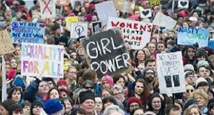
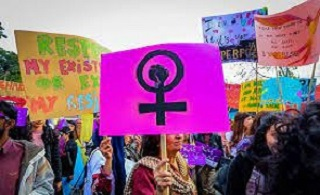
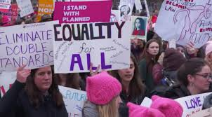
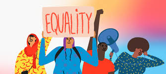

Today, gender bias continues to be a huge barrier for many women. These struggles include ensuring equal economic opportunities, educational equity, and an end to gender-based violence. A look back at history shows that women have made a great sacrifice in the fight for equality, including women’s suffrage. Despite the tremendous progress made in the struggle for gender equality, women still face violence, discrimination, and many barriers to equal participation in society. In the employment realm, laws and workplace policies that exclude women from certain job sectors and allow them to be forced out of the workplace when they get pregnant or return to work after having a baby cause persistent disparities in women’s income, wealth, and economic security.
The Women's Rights Movement has made enormous gains in the game of rights - giving women legal standing, respect in society, visibility, and voices. But women are still not truly fully equal, legally or in perception, and many groups of women remain ignored, that proves that women's rights is still relevant - and that the movement is far from over.
   